Brewwww 录屏取色第一段录屏 · 组件取色复核
23 个原分辨率画面，CoreMedia709 → sRGB。每张卡片下方展示实际采样像素，点击可看原尺寸。纹理与渐变显示代表色，P10/P90 表示各 RGB 通道的范围。文字、图案与视频压缩存在混色，不能据此宣称还原了原始设计文件。
应用拥有的主要颜色已接入工程。地图底图与系统控件仅作参考；未展示的状态仍待补充。照片夹渐变、照片页背景仍为近似重建。
主背景纸张基色
#2B2A2344s · 纹理/渐变代表色
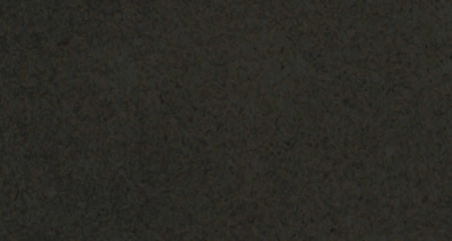
paperBase
原始像素矩形 [120, 1410, 900, 480]
P10 [38, 36, 32] / P90 [48, 46, 39]首页纸张背景复核
#2B2A231s · 纹理/渐变代表色
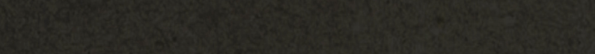
paperHome
原始像素矩形 [60, 1875, 990, 90]
P10 [38, 36, 32] / P90 [46, 45, 39]主标题/主文字
#D3D0CB1s · 平面/主色
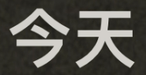
textPrimary
原始像素矩形 [495, 102, 186, 96]
P10 [187, 187, 180] / P90 [211, 208, 203]日期与次级文字
#A19B961s · 平面/主色
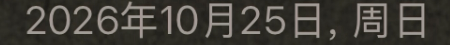
textSecondary
原始像素矩形 [360, 222, 450, 45]
P10 [156, 150, 145] / P90 [164, 156, 150]日历面板
#463E361s · 平面/主色
calendarPanel
原始像素矩形 [105, 465, 375, 114]
P10 [70, 62, 54] / P90 [70, 62, 54]本月汇总面板
#463E361s · 平面/主色
summaryPanel
原始像素矩形 [102, 1449, 300, 27]
P10 [70, 62, 54] / P90 [70, 62, 54]普通日期格
#655A541s · 平面/主色
calendarDay
原始像素矩形 [258, 681, 42, 27]
P10 [101, 90, 84] / P90 [101, 90, 84]有记录的日期格
#DCAB701s · 平面/主色
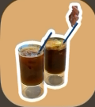
calendarSelected
原始像素矩形 [96, 1176, 120, 135]
P10 [211, 171, 112] / P90 [220, 171, 117]星期表头文字
#867F771s · 平面/主色
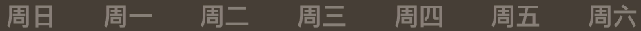
calendarWeekday
原始像素矩形 [120, 399, 930, 45]
P10 [113, 105, 97] / P90 [136, 127, 120]日期数字
#D3D0C91s · 平面/主色
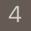
calendarNumber
原始像素矩形 [135, 714, 45, 45]
P10 [187, 185, 177] / P90 [213, 208, 203]汇总次级文字
#A19B931s · 文字/图案近似
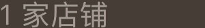
summaryCaption
原始像素矩形 [120, 1695, 300, 42]
P10 [115, 108, 100] / P90 [164, 155, 148]圆形按钮底色
#3837341s · 平面/主色
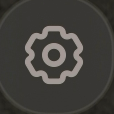
controlFill
原始像素矩形 [1200, 675, 114, 114]
P10 [46, 45, 39] / P90 [59, 57, 54]按钮/未选中图标
#A39A961s · 平面/主色
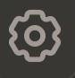
controlGlyph
原始像素矩形 [1215, 690, 84, 87]
P10 [134, 128, 123] / P90 [164, 154, 150]M/W 按钮底色复核
#3837341s · 平面/主色
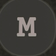
modeButtonFill
原始像素矩形 [1200, 837, 114, 114]
P10 [49, 48, 40] / P90 [57, 57, 54]竖向导航底色
#3837341s · 平面/主色
navigationFill
原始像素矩形 [1233, 1341, 42, 42]
P10 [56, 55, 52] / P90 [56, 55, 52]导航选中底板
#6665611s · 平面/主色
navigationSelected
原始像素矩形 [1227, 1170, 57, 30]
P10 [102, 101, 97] / P90 [102, 101, 97]选中杯子图标
#DCAB701s · 平面/主色
accentGlyph
原始像素矩形 [1215, 1200, 84, 90]
P10 [187, 155, 106] / P90 [220, 173, 134]新增按钮底色
#3837341s · 平面/主色
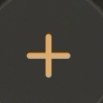
plusFill
原始像素矩形 [1200, 1770, 114, 114]
P10 [56, 55, 50] / P90 [57, 56, 54]新增加号
#DCAB701s · 平面/主色
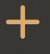
plusGlyph
原始像素矩形 [1221, 1800, 72, 78]
P10 [201, 171, 112] / P90 [220, 173, 129]照片夹后袋
#443D361s · 纹理/渐变代表色
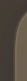
folderBack
原始像素矩形 [765, 1599, 27, 81]
P10 [66, 58, 51] / P90 [111, 99, 81]照片夹前袋左侧
#7265501s · 纹理/渐变代表色
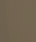
folderFrontLeft
原始像素矩形 [801, 1650, 36, 42]
P10 [111, 98, 79] / P90 [116, 102, 81]照片夹前袋中部
#7A6C541s · 纹理/渐变代表色
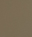
folderFrontCenter
原始像素矩形 [927, 1656, 36, 42]
P10 [120, 106, 83] / P90 [124, 109, 87]照片夹前袋右侧
#70685D1s · 纹理/渐变代表色
folderFrontRight
原始像素矩形 [1068, 1656, 27, 42]
P10 [110, 103, 92] / P90 [117, 108, 97]照片夹前袋底部
#6E63531s · 纹理/渐变代表色
folderFrontBottom
原始像素矩形 [906, 1755, 90, 15]
P10 [109, 96, 80] / P90 [111, 100, 85]照片夹上方凸片
#746A5A1s · 纹理/渐变代表色
folderTab
原始像素矩形 [1014, 1575, 42, 15]
P10 [115, 105, 90] / P90 [120, 107, 91]照片夹前照片边框
#DFB16F1s · 平面/主色
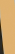
folderPhotoGold
原始像素矩形 [789, 1470, 15, 54]
P10 [223, 177, 111] / P90 [224, 178, 114]照片夹后照片白边
#FEFEFE1s · 平面/主色
folderPhotoWhite
原始像素矩形 [1050, 1458, 33, 12]
P10 [252, 252, 248] / P90 [254, 254, 254]照片页背景上方
#3F3A3924s · 纹理/渐变代表色
albumTop
原始像素矩形 [60, 90, 255, 105]
P10 [61, 58, 57] / P90 [63, 59, 57]照片页背景左侧中部
#47433F24s · 纹理/渐变代表色
albumMiddle
原始像素矩形 [45, 810, 105, 240]
P10 [68, 65, 61] / P90 [73, 70, 65]照片页背景下方
#3F3B3A24s · 纹理/渐变代表色
albumBottom
原始像素矩形 [210, 1770, 840, 150]
P10 [63, 58, 57] / P90 [66, 62, 61]照片页圆形按钮
#403F3D24s · 平面/主色
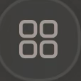
albumControlFill
原始像素矩形 [1200, 675, 114, 114]
P10 [59, 58, 56] / P90 [74, 73, 71]拍立得边框上部
#DFB16F24s · 平面/主色
photoFrameTop
原始像素矩形 [246, 564, 630, 36]
P10 [223, 177, 111] / P90 [223, 177, 113]拍立得边框底部
#DFB16F24s · 平面/主色
photoFrameBottom
原始像素矩形 [270, 1461, 570, 24]
P10 [223, 177, 111] / P90 [223, 177, 113]拍立得店铺文字
#32150024s · 文字/图案近似
photoFrameText
原始像素矩形 [264, 1356, 465, 48]
P10 [34, 20, 0] / P90 [57, 25, 15]拍立得日期文字
#79552124s · 文字/图案近似
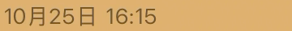
photoFrameCaption
原始像素矩形 [264, 1410, 360, 39]
P10 [114, 83, 21] / P90 [130, 92, 55]记录表单面板
#463E365s · 平面/主色
formPanel
原始像素矩形 [180, 1128, 540, 30]
P10 [70, 62, 54] / P90 [70, 62, 54]记录表单文字
#D3D0C95s · 平面/主色
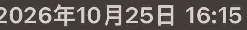
formText
原始像素矩形 [240, 1065, 510, 63]
P10 [192, 188, 181] / P90 [211, 208, 203]表单箭头与星标
#776D675s · 平面/主色
formPlaceholder
原始像素矩形 [987, 1860, 60, 72]
P10 [114, 106, 98] / P90 [120, 110, 103]保存确认按钮
#DCAB705s · 平面/主色
confirmFill
原始像素矩形 [1200, 840, 114, 114]
P10 [218, 170, 111] / P90 [220, 174, 122]保存确认勾号
#FAF9F45s · 平面/主色
confirmGlyph
原始像素矩形 [1215, 852, 84, 84]
P10 [250, 249, 231] / P90 [255, 250, 245]设置行面板
#463E3644s · 平面/主色
settingsPanel
原始像素矩形 [165, 315, 600, 30]
P10 [70, 62, 54] / P90 [70, 62, 54]开启项文字
#D3D0C844s · 平面/主色
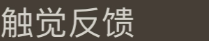
settingsText
原始像素矩形 [120, 633, 300, 60]
P10 [168, 164, 157] / P90 [212, 208, 201]关闭项文字
#A39A9444s · 文字/图案近似
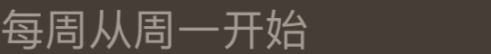
settingsMuted
原始像素矩形 [120, 369, 540, 60]
P10 [114, 106, 99] / P90 [164, 155, 148]开关开启轨道
#DCAB7044s · 平面/主色
toggleOn
原始像素矩形 [924, 648, 33, 30]
P10 [220, 171, 112] / P90 [220, 171, 112]开关关闭轨道
#E7E5DE44s · 平面/主色
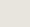
toggleOff
原始像素矩形 [978, 384, 30, 27]
P10 [231, 229, 222] / P90 [231, 229, 222]开关滑块
#FEFEFE44s · 平面/主色
toggleThumb
原始像素矩形 [993, 660, 12, 12]
P10 [254, 254, 254] / P90 [254, 254, 254]设置行细描边
#635B5344s · 平面/主色
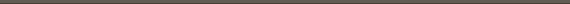
settingsPanelBorder
原始像素矩形 [300, 294, 570, 4]
P10 [70, 62, 52] / P90 [99, 92, 84]外观选中卡背景
#DCAB7065s · 平面/主色
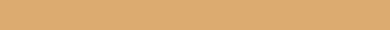
appearanceSelected
原始像素矩形 [666, 399, 390, 30]
P10 [220, 171, 112] / P90 [220, 171, 112]外观未选卡背景
#463E3665s · 平面/主色
appearanceUnselected
原始像素矩形 [81, 411, 360, 30]
P10 [70, 62, 54] / P90 [70, 62, 54]分页未选圆点
#4D4A4365s · 平面/主色
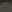
appearancePagination
原始像素矩形 [483, 1011, 12, 12]
P10 [40, 39, 32] / P90 [80, 75, 70]第一种纸张预览
#28272265s · 纹理/渐变代表色
paperPreviewOne
原始像素矩形 [165, 1440, 150, 240]
P10 [38, 36, 32] / P90 [43, 42, 36]第二种纸张预览
#2C2B2765s · 纹理/渐变代表色
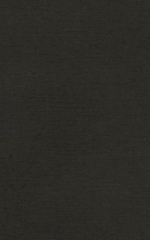
paperPreviewTwo
原始像素矩形 [585, 1440, 150, 240]
P10 [42, 40, 35] / P90 [46, 45, 42]第三种纸张预览
#302D2865s · 纹理/渐变代表色
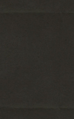
paperPreviewThree
原始像素矩形 [1041, 1440, 150, 240]
P10 [44, 43, 38] / P90 [50, 48, 43]店铺印章橙色
#B84D0781s · 文字/图案近似
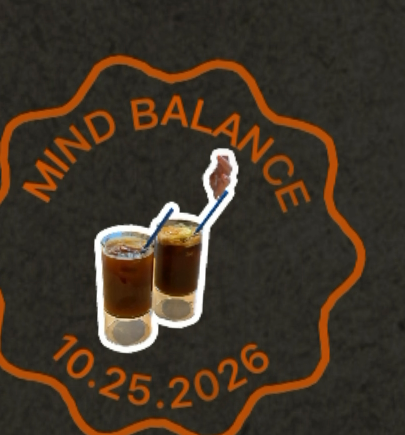
stampOrange
原始像素矩形 [630, 420, 405, 435]
P10 [135, 66, 6] / P90 [185, 84, 34]纪念印章粉色
#D97F6981s · 文字/图案近似
stampPink
原始像素矩形 [135, 990, 405, 249]
P10 [153, 103, 86] / P90 [218, 131, 113]印章金色文字
#C59A6581s · 文字/图案近似
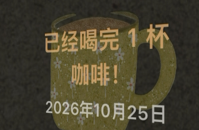
stampGold
原始像素矩形 [150, 528, 390, 255]
P10 [164, 135, 88] / P90 [197, 158, 110]地图店铺信息卡
#32363D99s · 纹理/渐变代表色
mapPanel
原始像素矩形 [510, 1650, 450, 150]
P10 [49, 52, 58] / P90 [52, 56, 63]地图打卡标记橙色
#D2540099s · 平面/主色
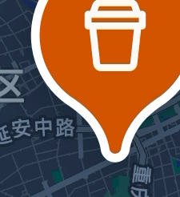
mapPin
原始像素矩形 [555, 825, 225, 246]
P10 [207, 84, 0] / P90 [210, 85, 2]地图陆地区域
#22304699s · 底图参考
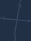
mapLand
原始像素矩形 [180, 390, 45, 60]
P10 [34, 48, 70] / P90 [38, 52, 74]地图圆形按钮
#32394A99s · 平面/主色
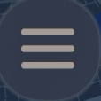
mapControlFill
原始像素矩形 [1200, 675, 114, 114]
P10 [48, 56, 68] / P90 [54, 62, 80]地图导航底色
#363D4699s · 平面/主色
mapNavigationFill
原始像素矩形 [1227, 1311, 42, 48]
P10 [54, 61, 70] / P90 [54, 61, 70]地图导航选中底色
#65686D99s · 平面/主色
mapNavigationSelected
原始像素矩形 [1227, 1671, 51, 24]
P10 [101, 104, 109] / P90 [102, 105, 110]系统照片选择器底色
#1C1C1E110s · 系统参考
systemPickerBackground
原始像素矩形 [75, 42, 870, 60]
P10 [28, 28, 30] / P90 [58, 58, 61]系统弹窗底色
#31302D50s · 系统参考
systemAlertBackground
原始像素矩形 [255, 330, 450, 30]
P10 [49, 48, 45] / P90 [50, 49, 46]系统键盘按键
#46444450s · 系统参考
systemKeyboardKey
原始像素矩形 [138, 1515, 36, 21]
P10 [68, 68, 68] / P90 [254, 254, 254]